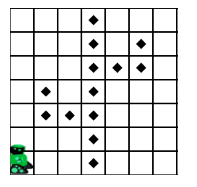
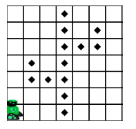
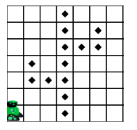
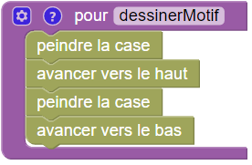
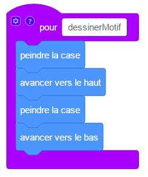
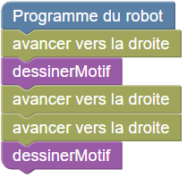
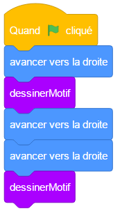
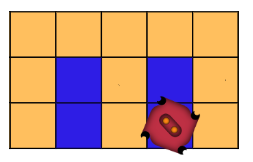

Cactus

 

Programmez le robot pour qu'il peigne toutes les cases marquées.
Pour y arriver sans utiliser trop de blocs, vous devrez créer une fonction. Créer une fonction revient à créer votre propre bloc, que vous pourrez ensuite utiliser à divers endroits de votre programme.
Voici un exemple de fonction, qui peint deux cases l'une au dessus de l'autre puis revient à sa position de départ :
 def cactus(): peindre() haut() peindre() bas()
Et voici un exemple de programme qui utilise cette fonction, et son résultat :
 droite() cactus() droite() droite() cactus()
Pour ne pas dépasser le nombre de blocs autorisés, vous devrez également utiliser des blocs de répétition.
Dans cette version, pensez à utiliser plusieurs fonctions pour économiser des blocs ! Vous pouvez glisser un nouveau bloc de définition de fonction et lui donner un autre nom que celui de la première fonction.